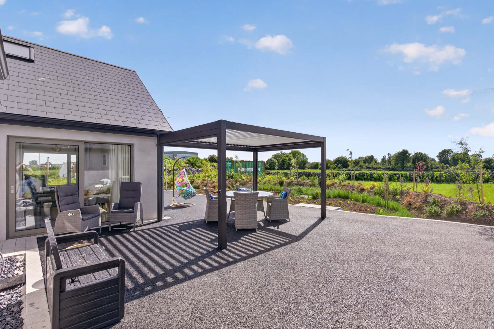

Book Direct
No booking fees, no middleman — just a friendly conversation with your host.
The best rates and the warmest welcome come from booking direct. Call or send a WhatsApp message to Breda and she'll take care of the rest.
Prefer a chat? Give Breda a call to check dates and ask anything about either stay.
Call BredaMessage any time and Breda will reply with availability and details as soon as she can.
Message on WhatsAppWhere we are
Glennascaul, Oranmore, County Galway — an 8-minute walk from Oranmore village and about 15 minutes from Galway city, just off the M6/M18. Exact directions are shared when you book.
Good to know
The Lodge is a luxury guest house with private ensuite rooms that sleep 2 — ideal for couples, business stays or those visiting Galway and the hospital. The Skylark Nest is a 4-bedroom apartment that sleeps up to 7 — perfect for families and groups. Just ask Breda and she'll help you choose.
The easiest way is to call or send a WhatsApp message to Breda directly. She'll check availability for your dates, answer any questions and confirm your booking — with no booking fees or middleman.
Both stays are in the grounds of Skylark House, Oranmore, County Galway — an 8-minute walk from Oranmore village and about 15 minutes from Galway city, just off the M6 and M18. Full directions are shared once you book.
The Lodge sleeps 2 per room, while The Skylark Nest sleeps up to 7 across 4 bedrooms.
Yes — there is free private parking on the premises for both stays.
Fast Wi-Fi, smart TV, heating, fresh linen and towels and free parking come as standard. The Nest also has a fully equipped kitchenette, washer/dryer and air conditioning; the Lodge offers premium motorised comfort beds, an exclusive guest lounge and a shared kitchen.